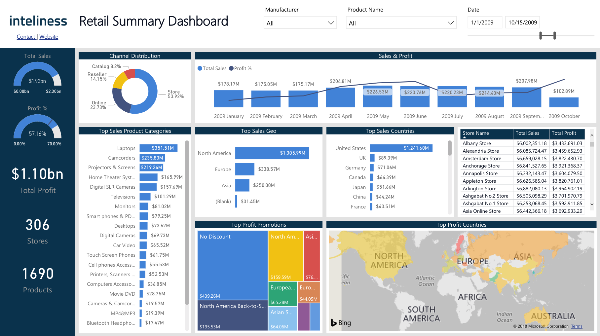

The Housing Price Prediction End-to-End Project is a machine learning project that predicts housing prices based on various features. It uses a dataset of housing prices, machine learning algorithms such as Linear Regression, Decision Trees, and Random Forest, and follows an end-to-end approach covering data preprocessing, model training and evaluation, and deployment. Python and various machine learning libraries such as NumPy, Pandas, Scikit-Learn, and Matplotlib are used for data processing, model training, and visualization, and Flask is used for deployment. This project demonstrates the potential of machine learning in predicting housing prices and provides a comprehensive example of the end-to-end machine learning workflow.


"Face Mask Detection using Tensor Flow" is a computer vision project that uses pre-trained deep learning models such as VGG16, MobileNetV2, and InceptionV3 to detect whether an individual is wearing a face mask or not. The project aims to compare the accuracy of different pre-trained models and determine which one provides the most accurate results.
The project uses TensorFlow for model training and evaluation on a dataset of images of people wearing or not wearing masks. The project presents the results in a comparative analysis of the accuracy of each pre-trained model and shows that InceptionV3 provided the most accurate results for detecting face masks.

A Bike Sales Analysis and Dashboard in Microsoft Excel can be a tool to help track and visualize data related to the sales of bikes. It can include various data points such as the number of bikes sold, the average price of a bike, the total revenue generated, and the top-selling bike models. The dashboard can use charts, graphs, and tables to represent this data in a way that is easy to understand and quickly identify trends. It may also include filters and drop-down menus to allow users to focus on specific time periods or regions.
This can help businesses make informed decisions about their sales and marketing strategies, track their performance, and measure the success of their efforts.
Stock Price Prediction of Tata Global using LSTM (Long Short-Term Memory) and TensorFlow can be a machine learning model that forecasts future stock prices of Tata Global Beverages Limited. LSTM is a type of deep learning neural network that is well-suited for time series data, such as stock prices. TensorFlow is an open-source machine learning framework that can be used to build and train LSTM models.
In this scenario, the model would be trained on historical stock prices of Tata Global Beverages. The LSTM network would use this information to learn patterns in the stock price data and make predictions about future prices. The model's predictions can be visualized and compared to actual stock prices to evaluate its accuracy. This information can then be used by investors, traders, and analysts to make informed decisions about buying or selling Tata Global Beverages stock.
Breast Cancer Classification using a Simple Neural Network with Historical Diagnosis Data is a machine learning model designed to predict the diagnosis of breast cancer based on patient data. This data can include factors such as age, family history, and results from other diagnostic tests. The neural network is trained on a dataset of past patient diagnoses, allowing it to learn patterns and relationships between patient data and breast cancer diagnosis.
The simple neural network consists of an input layer, hidden layers, and an output layer. The input layer receives the patient data, and each hidden layer processes the information and passes it to the next layer. The output layer produces the final diagnosis, which can be either benign (not cancerous) or malignant (cancerous). The neural network is trained using an optimization algorithm, such as gradient descent, that adjusts the weights of the connections between the layers to minimize the error between the predicted and actual diagnoses.

As a hardware manufacturer, Atliq Hardwares could have used MySQL for financial analysis, including storing and managing financial data, creating financial models and forecasts, and performing various financial analyses such as ratio analysis and trend analysis.
MySQL's data visualization and reporting tools could have also allowed Atliq to present financial data in a more intuitive and interactive way. This would have enabled Atliq to make informed decisions based on accurate and real-time financial data, critical for maintaining profitability and competitiveness in the industry.

An analysis of Atliq Hardwares using SQL would involve querying and analyzing the company's customer, product, and market data to gain insights into the business. This could include:
Customer analysis: Querying customer data to identify patterns and trends in customer behavior, such as purchasing history, demographics, and location. This information could be used to segment customers and tailor marketing efforts to specific groups.
Product analysis: Analyzing product data to understand which products are selling well and which are not. This could involve looking at sales data, inventory levels, and customer reviews. This information could be used to optimize product offerings and pricing strategies.
Market analysis: Querying market data to understand the competitive landscape and identify opportunities for growth. This could involve analyzing industry trends, competitor pricing and marketing strategies, and consumer demand.

Atliq could have used MySQL for supply chain analysis, including identifying bottlenecks, optimizing inventory levels, and reducing transportation costs. By analyzing this data, Atliq could have made informed decisions about sourcing suppliers, improving manufacturing processes, and optimizing their logistics operations.
MySQL for supply chain management analysis could have enabled Atliq Hardwares to make informed decisions based on accurate and real-time supply chain data. By optimizing their supply chain, Atliq could have reduced costs, improved operational efficiency, and maintained their competitive edge in the hardware manufacturing industry.

The Retail Sales Analysis Dashboard created by Atliq Hardware in Power BI is a valuable tool for managers and decision-makers. It provides real-time insights into the company's retail sales performance, allowing users to track and analyze sales data, identify trends and patterns, and make informed decisions about inventory management, pricing strategies, and sales forecasting.
The dashboard includes interactive visuals, such as charts and graphs, which allow users to explore different metrics and dimensions. By using this dashboard, managers can make data-driven decisions to improve the company's profitability and competitiveness. The Retail Sales Analysis Dashboard is an essential resource for any business looking to stay competitive and grow in today's retail environment.

A Covid-19 vaccine tracker dashboard in Tableau is a visual representation of the progress of the vaccine rollout and distribution efforts. It allows users to see real-time data on the number of doses administered, the demographics of individuals receiving the vaccine, and any other relevant metrics related to the vaccine effort. The dashboard may also include interactive features, such as drill-down capabilities, filtering options, and the ability to compare data from different regions or time periods. This type of dashboard helps organizations, governments, and individuals stay informed and track the progress of the vaccine rollout and its impact on the population.
A Netflix Movies & TV shows dashboard in Tableau is a visual representation of the streaming service's content library and viewing patterns. It allows users to see the popularity of different genres, the performance of specific titles, and regional viewing trends. The dashboard may include interactive features, such as the ability to filter by genre, release date, or popularity, as well as drill-down capabilities to see more detailed information on individual titles. This type of dashboard helps Netflix understand what content is resonating with their audience and make informed decisions on future acquisitions and production. It can also be useful for content creators and marketers to understand the viewing trends and preferences of the Netflix audience.

A Video Game Sales Dashboard in Tableau is an interactive data visualization tool that provides a comprehensive overview of the sales performance of video games. The dashboard is designed using Tableau's powerful data analysis capabilities, and allows users to quickly and easily analyze video game sales data, including sales by platform, genre, and geographic region. The dashboard provides a rich set of interactive features, including dynamic filters, drill-down capabilities, and the ability to compare sales across different categories and time periods. With its intuitive interface and powerful data analysis capabilities, the Video Game Sales Dashboard in Tableau is an essential tool for anyone involved in the video game industry, providing insights into sales trends and market dynamics to help drive business decisions.
Naive Bayes is a classification algorithm based on Bayes' theorem. Implementing it from scratch on the Iris dataset involves calculating the probabilities of each feature for each class label in the training set, using these probabilities to make predictions on the testing set, and evaluating the accuracy of the model. It is a great way to gain a deeper understanding of the algorithm and its strengths and weaknesses.